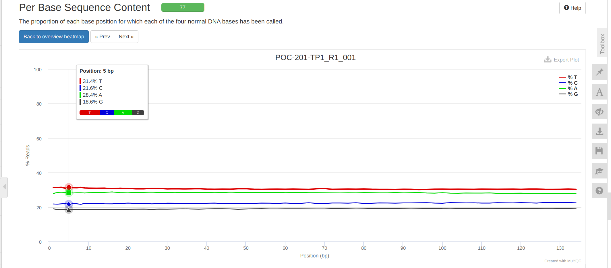
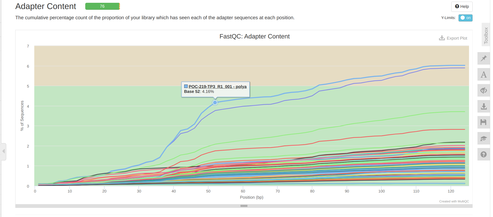

INTRO
I previously ran FastQC and MultiQC quality checks (20250220) (Notebook) on the P.tuahiniensis raw RNA-seq data received 20240926 (Notebook), as part of urol-e5/timeseries_molecular (GitHub repo).
The contents below are from markdown knitted from 01.00-F-Ptua-RNAseq-trimming-fastp-FastQC-MultiQC.md (commit f2d8235).
1 Background
This Rmd file trims P.tuahiniensis RNAseq files using fastp (Chen 2023), followed by quality checks with FastQC and MultiQC(Ewels et al. 2016).
Based off of the initial FastQC/MultiQC, we trimmed 15bp from each read.
1.1 Inputs
Raw WGBS FastQ files with the following pattern:
*.fastq.gz- Expects input files formatted like so:
<species_abbreviation>-<colony_ID>-<timepoint>_R[12]_001.fastq.gz
- Expects input files formatted like so:
If one needs to download the raw FastQs, please see 00.00-F-Ptua-RNAseq-reads-FastQC-MultiQC.Rmd
1.2 Outputs
The expected outputs will be:
*_fastqc.html: Individual FastQC reports.*fastp-trim*.fq.gz: Trimmed FastQ files.*.md5: Individual MD5 checksums for trimmed FastQs.*.fastp-trim.report.html: Individual fastp trimming reports. HTML format.*.fastp-trim.report.json: Individual fastp trimming reports. JSON format.multiqc_report.html: A summary report of the alignment results generated by MultiQC, in HTML format.- Due to the large file sizes of FastQs, these cannot be hosted in the timeseries_molecular GitHub repo. As such these files are available for download here:
2 Create a Bash variables file
This allows usage of Bash variables across R Markdown chunks.
{
echo "#### Assign Variables ####"
echo ""
echo "# Data directories"
echo 'export timeseries_dir=/home/shared/8TB_HDD_01/sam/gitrepos/urol-e5/timeseries_molecular'
echo 'export output_dir_top=${timeseries_dir}/F-Ptua/output/01.00-F-Ptua-RNAseq-trimming-fastp-FastQC-MultiQC'
echo 'export raw_reads_dir=${timeseries_dir}/F-Ptua/data/rnaseq-raw-fastqs'
echo ""
echo "# Paths to programs"
echo 'export programs_dir="/home/shared"'
echo 'export fastp="${programs_dir}/fastp"'
echo 'export fastqc=${programs_dir}/FastQC-0.12.1/fastqc'
echo 'export multiqc=/home/sam/programs/mambaforge/bin/multiqc'
echo ""
echo "# Set FastQ filename patterns"
echo "export fastq_pattern='*.fastq.gz'"
echo "export R1_fastq_pattern='*_R1_*.fastq.gz'"
echo "export R2_fastq_pattern='*_R2_*.fastq.gz'"
echo "export trimmed_fastq_pattern='*fastp-trim.fq.gz'"
echo ""
echo "# Set number of CPUs to use"
echo 'export threads=40'
echo ""
echo "## Inititalize arrays"
echo 'export fastq_array_R1=()'
echo 'export fastq_array_R2=()'
echo 'export raw_fastqs_array=()'
echo 'export R1_names_array=()'
echo 'export R2_names_array=()'
echo ""
echo "# Programs associative array"
echo "declare -A programs_array"
echo "programs_array=("
echo '[fastp]="${fastp}" \'
echo '[fastqc]="${fastqc}" \'
echo '[multiqc]="${multiqc}" \'
echo ")"
echo ""
echo "# Print formatting"
echo 'export line="--------------------------------------------------------"'
echo ""
} > .bashvars
cat .bashvars#### Assign Variables ####
# Data directories
export timeseries_dir=/home/shared/8TB_HDD_01/sam/gitrepos/urol-e5/timeseries_molecular
export output_dir_top=${timeseries_dir}/F-Ptua/output/01.00-F-Ptua-RNAseq-trimming-fastp-FastQC-MultiQC
export raw_reads_dir=${timeseries_dir}/F-Ptua/data/rnaseq-raw-fastqs
# Paths to programs
export programs_dir="/home/shared"
export fastp="${programs_dir}/fastp"
export fastqc=${programs_dir}/FastQC-0.12.1/fastqc
export multiqc=/home/sam/programs/mambaforge/bin/multiqc
# Set FastQ filename patterns
export fastq_pattern='*.fastq.gz'
export R1_fastq_pattern='*_R1_*.fastq.gz'
export R2_fastq_pattern='*_R2_*.fastq.gz'
export trimmed_fastq_pattern='*fastp-trim.fq.gz'
# Set number of CPUs to use
export threads=40
## Inititalize arrays
export fastq_array_R1=()
export fastq_array_R2=()
export raw_fastqs_array=()
export R1_names_array=()
export R2_names_array=()
# Programs associative array
declare -A programs_array
programs_array=(
[fastp]="${fastp}" \
[fastqc]="${fastqc}" \
[multiqc]="${multiqc}" \
)
# Print formatting
export line="--------------------------------------------------------"3 Fastp Trimming
fastp (Chen 2023) is set to auto-detect Illumina adapters, as well as trim the first 15bp from each read, as past experience shows these first 15bp are more inconsistent than the remainder of the read length.
# Load bash variables into memory
source .bashvars
# Make output directories, if it doesn't exist
mkdir --parents "${output_dir_top}"
# Change to raw reads directory
cd "${raw_reads_dir}"
# Create arrays of fastq R1 files and sample names
for fastq in ${R1_fastq_pattern}
do
fastq_array_R1+=("${fastq}")
R1_names_array+=("$(echo "${fastq}" | awk -F"_" '{print $1}')")
done
# Create array of fastq R2 files
for fastq in ${R2_fastq_pattern}
do
fastq_array_R2+=("${fastq}")
R2_names_array+=("$(echo "${fastq}" | awk -F"_" '{print $1}')")
done
# Create list of fastq files used in analysis
# Create MD5 checksum for reference
if [ ! -f "${output_dir_top}"/raw-fastq-checksums.md5 ]; then
for fastq in *.gz
do
md5sum ${fastq} >> "${output_dir_top}"/raw-fastq-checksums.md5
done
fi
# Run fastp on files
# Adds JSON report output for downstream usage by MultiQC
for index in "${!fastq_array_R1[@]}"
do
R1_sample_name=$(echo "${R1_names_array[index]}")
R2_sample_name=$(echo "${R2_names_array[index]}")
${fastp} \
--in1 ${fastq_array_R1[index]} \
--in2 ${fastq_array_R2[index]} \
--detect_adapter_for_pe \
--trim_poly_g \
--trim_poly_x \
--trim_front1 15 \
--trim_front2 15 \
--thread ${threads} \
--html "${output_dir_top}"/"${R1_sample_name}".fastp-trim.report.html \
--json "${output_dir_top}"/"${R1_sample_name}".fastp-trim.report.json \
--out1 "${output_dir_top}"/"${R1_sample_name}"_R1_001.fastp-trim.fq.gz \
--out2 "${output_dir_top}"/"${R2_sample_name}"_R2_001.fastp-trim.fq.gz \
2>> "${output_dir_top}"/fastp.stderr
# Generate md5 checksums for newly trimmed files
cd "${output_dir_top}"
md5sum "${R1_sample_name}"_R1_001.fastp-trim.fq.gz > "${R1_sample_name}"_R1_001.fastp-trim.fq.gz.md5
md5sum "${R2_sample_name}"_R2_001.fastp-trim.fq.gz > "${R2_sample_name}"_R2_001.fastp-trim.fq.gz.md5
cd -
done/home/shared/8TB_HDD_01/sam/gitrepos/urol-e5/timeseries_molecular/F-Ptua/data/rnaseq-raw-fastqs
/home/shared/8TB_HDD_01/sam/gitrepos/urol-e5/timeseries_molecular/F-Ptua/data/rnaseq-raw-fastqs
/home/shared/8TB_HDD_01/sam/gitrepos/urol-e5/timeseries_molecular/F-Ptua/data/rnaseq-raw-fastqs
/home/shared/8TB_HDD_01/sam/gitrepos/urol-e5/timeseries_molecular/F-Ptua/data/rnaseq-raw-fastqs
/home/shared/8TB_HDD_01/sam/gitrepos/urol-e5/timeseries_molecular/F-Ptua/data/rnaseq-raw-fastqs
/home/shared/8TB_HDD_01/sam/gitrepos/urol-e5/timeseries_molecular/F-Ptua/data/rnaseq-raw-fastqs
/home/shared/8TB_HDD_01/sam/gitrepos/urol-e5/timeseries_molecular/F-Ptua/data/rnaseq-raw-fastqs
/home/shared/8TB_HDD_01/sam/gitrepos/urol-e5/timeseries_molecular/F-Ptua/data/rnaseq-raw-fastqs
/home/shared/8TB_HDD_01/sam/gitrepos/urol-e5/timeseries_molecular/F-Ptua/data/rnaseq-raw-fastqs
/home/shared/8TB_HDD_01/sam/gitrepos/urol-e5/timeseries_molecular/F-Ptua/data/rnaseq-raw-fastqs
/home/shared/8TB_HDD_01/sam/gitrepos/urol-e5/timeseries_molecular/F-Ptua/data/rnaseq-raw-fastqs
/home/shared/8TB_HDD_01/sam/gitrepos/urol-e5/timeseries_molecular/F-Ptua/data/rnaseq-raw-fastqs
/home/shared/8TB_HDD_01/sam/gitrepos/urol-e5/timeseries_molecular/F-Ptua/data/rnaseq-raw-fastqs
/home/shared/8TB_HDD_01/sam/gitrepos/urol-e5/timeseries_molecular/F-Ptua/data/rnaseq-raw-fastqs
/home/shared/8TB_HDD_01/sam/gitrepos/urol-e5/timeseries_molecular/F-Ptua/data/rnaseq-raw-fastqs
/home/shared/8TB_HDD_01/sam/gitrepos/urol-e5/timeseries_molecular/F-Ptua/data/rnaseq-raw-fastqs
/home/shared/8TB_HDD_01/sam/gitrepos/urol-e5/timeseries_molecular/F-Ptua/data/rnaseq-raw-fastqs
/home/shared/8TB_HDD_01/sam/gitrepos/urol-e5/timeseries_molecular/F-Ptua/data/rnaseq-raw-fastqs
/home/shared/8TB_HDD_01/sam/gitrepos/urol-e5/timeseries_molecular/F-Ptua/data/rnaseq-raw-fastqs
/home/shared/8TB_HDD_01/sam/gitrepos/urol-e5/timeseries_molecular/F-Ptua/data/rnaseq-raw-fastqs
/home/shared/8TB_HDD_01/sam/gitrepos/urol-e5/timeseries_molecular/F-Ptua/data/rnaseq-raw-fastqs
/home/shared/8TB_HDD_01/sam/gitrepos/urol-e5/timeseries_molecular/F-Ptua/data/rnaseq-raw-fastqs
/home/shared/8TB_HDD_01/sam/gitrepos/urol-e5/timeseries_molecular/F-Ptua/data/rnaseq-raw-fastqs
/home/shared/8TB_HDD_01/sam/gitrepos/urol-e5/timeseries_molecular/F-Ptua/data/rnaseq-raw-fastqs
/home/shared/8TB_HDD_01/sam/gitrepos/urol-e5/timeseries_molecular/F-Ptua/data/rnaseq-raw-fastqs
/home/shared/8TB_HDD_01/sam/gitrepos/urol-e5/timeseries_molecular/F-Ptua/data/rnaseq-raw-fastqs
/home/shared/8TB_HDD_01/sam/gitrepos/urol-e5/timeseries_molecular/F-Ptua/data/rnaseq-raw-fastqs
/home/shared/8TB_HDD_01/sam/gitrepos/urol-e5/timeseries_molecular/F-Ptua/data/rnaseq-raw-fastqs
/home/shared/8TB_HDD_01/sam/gitrepos/urol-e5/timeseries_molecular/F-Ptua/data/rnaseq-raw-fastqs
/home/shared/8TB_HDD_01/sam/gitrepos/urol-e5/timeseries_molecular/F-Ptua/data/rnaseq-raw-fastqs
/home/shared/8TB_HDD_01/sam/gitrepos/urol-e5/timeseries_molecular/F-Ptua/data/rnaseq-raw-fastqs
/home/shared/8TB_HDD_01/sam/gitrepos/urol-e5/timeseries_molecular/F-Ptua/data/rnaseq-raw-fastqs
/home/shared/8TB_HDD_01/sam/gitrepos/urol-e5/timeseries_molecular/F-Ptua/data/rnaseq-raw-fastqs
/home/shared/8TB_HDD_01/sam/gitrepos/urol-e5/timeseries_molecular/F-Ptua/data/rnaseq-raw-fastqs
/home/shared/8TB_HDD_01/sam/gitrepos/urol-e5/timeseries_molecular/F-Ptua/data/rnaseq-raw-fastqs
/home/shared/8TB_HDD_01/sam/gitrepos/urol-e5/timeseries_molecular/F-Ptua/data/rnaseq-raw-fastqs
/home/shared/8TB_HDD_01/sam/gitrepos/urol-e5/timeseries_molecular/F-Ptua/data/rnaseq-raw-fastqs
/home/shared/8TB_HDD_01/sam/gitrepos/urol-e5/timeseries_molecular/F-Ptua/data/rnaseq-raw-fastqs
/home/shared/8TB_HDD_01/sam/gitrepos/urol-e5/timeseries_molecular/F-Ptua/data/rnaseq-raw-fastqs4 Quality Check with FastQC and MultiQC
4.1 FastQC
# Load bash variables into memory
source .bashvars
cd "${output_dir_top}"
############ RUN FASTQC ############
# Create array of trimmed FastQs
trimmed_fastqs_array=(${trimmed_fastq_pattern})
# Pass array contents to new variable as space-delimited list
trimmed_fastqc_list=$(echo "${trimmed_fastqs_array[*]}")
echo "Beginning FastQC on trimmed reads..."
echo ""
# Run FastQC
### NOTE: Do NOT quote raw_fastqc_list
${fastqc} \
--threads ${threads} \
--outdir "${output_dir_top}" \
--quiet \
${trimmed_fastqc_list}
echo "FastQC on trimmed reads complete!"
echo ""
############ END FASTQC ############Beginning FastQC on trimmed reads...
application/gzip
application/gzip
application/gzip
application/gzip
application/gzip
application/gzip
application/gzip
application/gzip
application/gzip
application/gzip
application/gzip
application/gzip
application/gzip
application/gzip
application/gzip
application/gzip
application/gzip
application/gzip
application/gzip
application/gzip
application/gzip
application/gzip
application/gzip
application/gzip
application/gzip
application/gzip
application/gzip
application/gzip
application/gzip
application/gzip
application/gzip
application/gzip
application/gzip
application/gzip
application/gzip
application/gzip
application/gzip
application/gzip
application/gzip
application/gzip
application/gzip
application/gzip
application/gzip
application/gzip
application/gzip
application/gzip
application/gzip
application/gzip
application/gzip
application/gzip
application/gzip
application/gzip
application/gzip
application/gzip
application/gzip
application/gzip
application/gzip
application/gzip
application/gzip
application/gzip
application/gzip
application/gzip
application/gzip
application/gzip
application/gzip
application/gzip
application/gzip
application/gzip
application/gzip
application/gzip
application/gzip
application/gzip
application/gzip
application/gzip
application/gzip
application/gzip
application/gzip
application/gzip
FastQC on trimmed reads complete!4.2 MultiQC
Uses --cl-config "sp: { fastp: { fn: '*report.json' } }" to update the MultiQC search pattern for the fastp module.
# Load bash variables into memory
source .bashvars
cd "${output_dir_top}"
${programs_array[multiqc]} . \
--cl-config "sp: { fastp: { fn: '*report.json' } }" \
--interactive
# Remove zip files
rm *_fastqc.zip /// MultiQC 🔍 | v1.14
| multiqc | MultiQC Version v1.27 now available!
| multiqc | Search path : /home/shared/8TB_HDD_01/sam/gitrepos/urol-e5/timeseries_molecular/F-Ptua/output/01.00-F-Ptua-RNAseq-trimming-fastp-FastQC-MultiQC
| searching | ━━━━━━━━━━━━━━━━━━━━━━━━━━━━━━━━━━━━━━━━ 100% 392/392
| fastp | Found 39 reports
| fastqc | Found 78 reports
| multiqc | Compressing plot data
| multiqc | Report : multiqc_report.html
| multiqc | Data : multiqc_data
| multiqc | MultiQC completeRESULTS
Trimming is okay (not great). The level of polyA sequqence still present in reads, despite the use of the --trim_poly_x (which should handle removal of polyA sequences…) in fastp is a bit disappointing.
MultiQC report:

